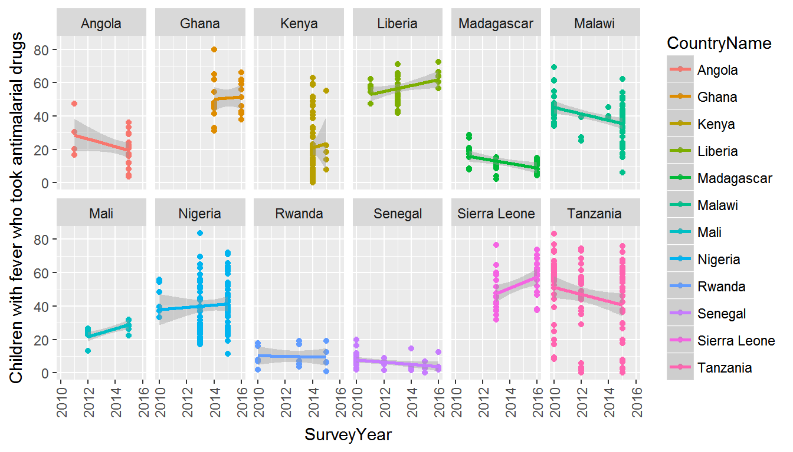

introduction.Rmdrdhs is a package for management and analysis of Demographic and Health Survey (DHS) data. This includes functionality to:
This process is described below and should cover most functionality that will be needed for working with these datasets.
Install rdhs from github with devtools:
# install.packages("devtools")
# devtools::install_github("OJWatson/rdhs")
library(rdhs)The DHS API has many endpoints that can be accessed using anyone of dhs_<endpoint>() functions. All exported functions within rdhs that start dhs_ interact with a different with a different endpoint of the DHS API. Their website gives great information about the different search terms and filters that can be used, and we have tried to include all of this within the documentation of each function.
One of those endpoints, dhs_data(), interacts with the the publishd set of standard health indicator data calculated by the DHS. This endpoint allows use to retrieve a set of health indicators that have been sample weighted to give country, subnational estimates that can be further refined by education and wealth brackets. To do this we use the dhs_data() endpoint, which we can then either search for specific indicators, or by querying for indicators that have been tagged within specific areas.
## what are the indicators
indicators <- dhs_indicators()
indicators[1,]## Definition
## 1: Age-specific fertility rate for the three years preceding the survey for age group 15-19 expressed per 1,000 women
## NumberScale IndicatorType MeasurementType IsQuickStat ShortName
## 1: 0 I Rate 0 ASFR 15-19
## IndicatorId Level1 IndicatorTotalId Level2 Level3
## 1: FE_FRTR_W_A15 Fertility Fertility rates Women
## SDRID IndicatorOldId TagIds DenominatorWeightedId
## 1: FEFRTRWA15 19165001 74, 1, 7, 81, 80
## Label IndicatorOrder
## 1: Age specific fertility rate: 15-19 11763010
## Denominator
## 1: Per thousand women years exposed in the period 1-36 months prior to interview
## QuickStatOrder IndicatorSpecial1Id DenominatorUnweightedId
## 1:
## IndicatorSpecial2Id
## 1:Each call to a DHS endpoint returns a data.table with all the results avaialable by default. The DHS has a unique IndicatorId for each of the statistics it calculates. The definition and specific string for each indicator is included within the IndicatorId and Definition variable:
# grab the first 5 alphabetically
dplyr::group_by(indicators,IndicatorId) %>% dplyr::summarise(Definition = Definition) %>% head(5)## # A tibble: 5 x 2
## IndicatorId Definition
## <chr> <chr>
## 1 AH_CIGA_M_UNW Number of men who smoke cigarettes (unweighted)
## 2 AH_CIGA_W_10P Percentage of women who smoked 10+ cigarettes in precedin~
## 3 AH_CIGA_W_12C Percentage of women who smoked 1-2 cigarettes in precedin~
## 4 AH_CIGA_W_35C Percentage of women who smoked 3-5 cigarettes in precedin~
## 5 AH_CIGA_W_69C Percentage of women who smoked 6-9 cigarettes in precedin~Since there are quite a lot of indicators, it might be easier to first query by tags. The DHS tags their indicators by what areas of demography and health they relate to, e.g. anaemia, literacy, malaria parasitaemia are all specific tags. First let’s look at what the tags are, by interacting with the dhs_tags() endpoint, before grabbing data that related to malaria parasitaemia in the DRC and Tanzania since 2010:
# What are the tags
tags <- dhs_tags()
# Let's say we want to view the tags that relate to malaria
tags[grepl("Malaria", tags$TagName), ]## TagType TagName TagID TagOrder
## 1: 0 Malaria Parasitemia 36 540
## 2: 2 Select Malaria Indicators 79 1000# and now let's then grab this data by specifying the countryIds and the survey year starts
data <- dhs_data(tagIds = 36,countryIds = c("CD","TZ"),breakdown="subnational",surveyYearStart = 2010)
data[1,]## DataId Indicator SurveyId IsPreferred Value
## 1: 3121901 Malaria prevalence according to RDT CD2013DHS 1 17.1
## SDRID Precision RegionId SurveyYearLabel SurveyType
## 1: MLPMALCRDT 1 CDDHS2013503010 2013-14 DHS
## SurveyYear IndicatorOrder DHS_CountryCode CILow
## 1: 2013 125136010 CD
## CountryName IndicatorType CharacteristicId
## 1: Congo Democratic Republic I 503010
## CharacteristicCategory IndicatorId CharacteristicOrder
## 1: Region ML_PMAL_C_RDT 1503010
## CharacteristicLabel ByVariableLabel DenominatorUnweighted
## 1: Kinshasa 406
## DenominatorWeighted CIHigh IsTotal ByVariableId
## 1: 532 0 0Depending on your analysis this maybe more than enough detail. It is also worth mentioning that this data can also be accessed via DHS STATcompiler if you prefer a click and collect version. However, hopefully one can see that selecting a lot of different indicators for multiple countries and breakdowns should be a lot easier using the rdhs API interaction. For example we can very quickly find out the trends in antimalarial use in Africa, and see if perhaps antimalarial prescription has decreased after RDTs were introduced (assumed 2010).
# Make an api request
resp <- dhs_data(indicatorIds = "ML_FEVT_C_AML", surveyYearStart = 2010,breakdown = "subnational")
# filter it to 12 countries for space
countries <- c("Angola","Ghana","Kenya","Liberia",
"Madagascar","Mali","Malawi","Nigeria",
"Rwanda","Sierra Leone","Senegal","Tanzania")
# and plot the results
library(ggplot2)## Warning: package 'ggplot2' was built under R version 3.4.3ggplot(resp[resp$CountryName %in% countries,],
aes(x=SurveyYear,y=Value,colour=CountryName)) +
geom_point() +
geom_smooth(method = "glm") +
theme(axis.text.x = element_text(angle = 90, vjust = .5)) +
ylab(resp$Indicator[1]) +
facet_wrap(~CountryName,ncol = 6) 
If we incorrectly entered a filter query (very possible), rdhs will let us know our request was invalid:
# Make an api request
resp <- dhs_data(indicatorIds="ML_FEVT_C_AMasfafasfL",
surveyYearStart=202231231306,
breakdown="subParTyping")## Error in handle_api_response(resp, TRUE): DHS API Request Failed [500] Error Type: dhs_internal_server_errorYou may, however, wish to do more nuanced analysis than the API allows. The following 4 section detail a very basic example of how to quickly identify, download and extract datasets you are interested in.
Let’s say we want to get all the survey data from the Democratic Republic of Congo and Tanzania in the last 5 years (since 2013), which covers the use of rapid diagnostic tests (RDTs) for malaria. To begin we’ll interact with the DHS API to identify our datasets.
To start our extraction we’ll query the surveyCharacteristics endpoint using dhs_surveyCharacteristics():
## make a call with no arguments
sc <- dhs_surveyCharacteristics()
sc[grepl("Malaria", sc$SurveyCharacteristicName), ]## SurveyCharacteristicID SurveyCharacteristicName
## 1: 96 Malaria - DBS
## 2: 90 Malaria - Microscopy
## 3: 89 Malaria - RDT
## 4: 57 Malaria module
## 5: 8 Malaria/bednet questionsThere are 87 different survey characteristics, with one specific survey characteristic for Malaria RDTs. We’ll use this to then find the surveys that include this characteristic. We can also at this point filter for our desired countries and years. The DHS API allows for countries to be filtered using by their countryIds, which is one of the arguments in dhs_surveys(). To have a look at what each countries countryId is we can use another of the API endpoints first:
## what are the countryIds
ids <- dhs_countries(returnFields=c("CountryName", "DHS_CountryCode"))
str(ids)## Classes 'data.table' and 'data.frame': 94 obs. of 2 variables:
## $ DHS_CountryCode: chr "AF" "AL" "AO" "AM" ...
## $ CountryName : chr "Afghanistan" "Albania" "Angola" "Armenia" ...
## - attr(*, ".internal.selfref")=<externalptr># lets find all the surveys that fit our search criteria
survs <- dhs_surveys(surveyCharacteristicIds = 89,countryIds = c("CD","TZ"),surveyYearStart = 2013)
# and lastly use this to find the datasets we will want to download and let's download the flat files (.dat) datasets (have a look in the dhs_datasets documentation for all argument options, and fileformat abbreviations etc.)
datasets <- dhs_datasets(surveyIds = survs$SurveyId, fileFormat = "flat")
str(datasets)## Classes 'data.table' and 'data.frame': 19 obs. of 13 variables:
## $ FileFormat : chr "Flat ASCII data (.dat)" "Flat ASCII data (.dat)" "Flat ASCII data (.dat)" "Flat ASCII data (.dat)" ...
## $ FileSize : int 198561 7030083 3226262 8028957 11426382 4794941 1569680 6595349 63022 394824 ...
## $ DatasetType : chr "HIV Datasets" "Survey Datasets" "Survey Datasets" "Survey Datasets" ...
## $ SurveyNum : int 421 421 421 421 421 421 421 421 421 421 ...
## $ SurveyId : chr "CD2013DHS" "CD2013DHS" "CD2013DHS" "CD2013DHS" ...
## $ FileType : chr "HIV Test Results Recode" "Births Recode" "Couples' Recode" "Household Recode" ...
## $ FileDateLastModified: chr "November, 14 2014 12:48:34" "November, 17 2014 15:42:54" "November, 17 2014 15:43:04" "September, 19 2016 09:57:20" ...
## $ SurveyYearLabel : chr "2013-14" "2013-14" "2013-14" "2013-14" ...
## $ SurveyType : chr "DHS" "DHS" "DHS" "DHS" ...
## $ SurveyYear : int 2013 2013 2013 2013 2013 2013 2013 2013 2013 2013 ...
## $ DHS_CountryCode : chr "CD" "CD" "CD" "CD" ...
## $ FileName : chr "CDAR61FL.ZIP" "CDBR61FL.ZIP" "CDCR61FL.ZIP" "CDHR61FL.ZIP" ...
## $ CountryName : chr "Congo Democratic Republic" "Congo Democratic Republic" "Congo Democratic Republic" "Congo Democratic Republic" ...
## - attr(*, ".internal.selfref")=<externalptr>We can now use this to download our datasets for further analysis.
We can now go ahead and download our datasets. To do this we need to first create a client. The client is an R6 class (similar to R’s built in reference classes and make caching survey and API queries more reproducible) and will be used to log in to your DHS account, download datasets for you, and help query those datasets for the question you are interested in. The client will also cache all of these processes, which really helps increase the reproducibility of your analysis.
To create our client we use the client() function and you need to specify your log in credentials for the DHS website. This is best provided, for security reasons, by giving a path to a file that contains your email, password and project title that you used when setting up your account with the DHS website. This should take the form of a file path that contains 3 lines, something like this:
It also takes an argument for its root, which is the directory path where the client and associated caches will be stored. If left bank, a suitable directory will be created within your user cache directory for your operating system.
## create a client
client <- client_dhs(credentials = "credentials_file")
client## <client_dhs>
## Public:
## available_datasets: function (clear_cache_first = FALSE)
## clear_namespace: function (namespace)
## dhs_api_request: function (api_endpoint, query = list(), api_key = private$api_key,
## extract: function (questions, add_geo = TRUE)
## get_cache_date: function ()
## get_datasets: function (dataset_filenames, download_option = "rds", reformat = FALSE,
## get_downloaded_datasets: function ()
## get_root: function ()
## get_var_labels: function (dataset_filenames = NULL, dataset = NULL)
## initialize: function (api_key = NULL, root = NULL, credentials = NULL)
## save_client: function ()
## set_cache_date: function (date)
## survey_questions: function (dataset_filenames, search_terms = NULL, essential_terms = NULL,
## survey_variables: function (dataset_filenames, variables, essential_variables = NULL,
## Private:
## api_endpoints: data indicators countries surveys surveycharacteristics ...
## api_key: ICLSPH-527168
## cache_date: 2018-04-14 21:59:07
## check_available_datasets: function (filenames)
## credentials_path: C:\Users\Oliver\GoogleDrive\AcademicWork\Imperial\git\rd ...
## na_s: ^na -|^na-|.*-na$|.* - na$| \{NA\}$
## package_version: package_version, numeric_version
## root: C:\Users\Oliver\AppData\Local\Oliver\rdhs\Cache
## storr: storr, R6
## url: https://api.dhsprogram.com/rest/dhs/Before we use our client to download our datasets, it is worth mentioning that the client can be passed as an argument to any of the API functions we have just seen. This will then cache the results for you, so that if you are working remotely or without a good internet connection you can still return your previous API requests:
# before it's cached we provide the client so the results is cached within our client
s <- dhs_surveys(client = client)
# with it cached it will be returned much quicker with the client argument
microbenchmark::microbenchmark(dhs_surveys(client = client), times = 1)## Unit: milliseconds
## expr min lq mean median uq
## dhs_surveys(client = client) 3.726607 3.726607 3.726607 3.726607 3.726607
## max neval
## 3.726607 1# without it cached again for comparison
microbenchmark::microbenchmark(dhs_surveys(),times = 1)## Unit: milliseconds
## expr min lq mean median uq max neval
## dhs_surveys() 933.1655 933.1655 933.1655 933.1655 933.1655 933.1655 1Now back to our dataset downloads. If we have a look back at our datasets object, we’ll see there are 19 datasets listed. However, not all of them will be relevant to our malaria RDT questions. One approach is to head to the DHS website and have a look at the DHS Recodes, and look at the recodes that relate to the surveys. The other alternative is to download all the surveys and then query the variables within them. This is what we’ll demonstrate here as it also demonstrates more of the package’s functionality:
So first we will download all these datasets:
The function returns a list with a file path to where the downloaded datasets have been saved to.
We can now examine what it is we have actually downloadsed, by reading in one of these datasets:
# read in our dataset
cdpr <- readRDS(downloads$CDPR61FL)The dataset returned here is a list that contains the dataset but also a data.frame called variable_names. This contains all the survey questions within the dataset, and what their survey variable is:
# let's look at the variable_names
head(get_var_labels(cdpr))## variable description
## 1 hhid Case Identification
## 2 hvidx Line number
## 3 hv000 Country code and phase
## 4 hv001 Cluster number
## 5 hv002 Household number
## 6 hv003 Respondent's line number (answering Household questionnaire)# and then the dataset
class(cdpr$hv024)## [1] "labelled"This is the default behaviour for the client function get_datasets - it will download the datasets for you, and then by default save them in your client’s root directory and then unzip them and read them in for you, and save the resultant data.frame as a .rds object within the client’s root directory. You can control this behaviour using the download_option argument as such:
client$get_datasets(download_option = "zip") - Just the downloaded zip will be savedclient$get_datasets(download_option = "rds") - Just the read in rds will be savedclient$get_datasets(download_option = "both") - The zip is downloaded and saved as well as the read in rdsThe other main reason for reading the dataset in straight away as the default option is that the created table of all the survey variables and their definitions is cached then and there, which then allows us to quickly query for particular search terms or survey variables:
# rapid diagnostic test search
questions <- client$survey_questions(datasets$FileName, search_terms = "malaria rapid test")
table(questions$dataset_filename)##
## CDHR61FL CDPR61FL TZGC7AFL TZIR7HFL
## 24 1 1 48What we see from the questions is that the question “Result of malaria rapid test” appears in a few different datasets. This is because the household member recode datasets (CDPR61SV, TZPR7HSV) stores information about the children in a household, with one row per child, whereas the household recode (CDHR61SV, TZHR7HSV) stores information about the household, and thus flattens the information from each child into different subvariables (hml35$01/02 etc). As such it is easier to extract this information from the household member recodes.
To extract our data we pass our questions object to the client function extract, which will create a list with each dataset and its extracted data as a data.frame. We also have the option to add any geographic data available, which will download the geographic data files for you and add this data to you resultant extract:
# let's just use the PR files thus
datasets <- dhs_datasets(surveyIds = survs$SurveyId, fileFormat = "FL", fileType = "PR")
downloads <- client$get_datasets(datasets$FileName)
# and grab the questions from this again along with also questions detailing the province
questions <- client$survey_questions(datasets$FileName, search_terms = c("malaria rapid test"))
# and now extract the data
extract <- client$extract(questions, add_geo = TRUE)## Starting Survey 1 out of 2 surveys:CDPR61FL## Loading required package: sp## Warning: package 'sp' was built under R version 3.4.3## Starting Survey 2 out of 2 surveys:TZPR7HFL# what does our extract look like
str(extract)## List of 2
## $ CDPR61FL:'data.frame': 95949 obs. of 7 variables:
## ..$ hml35 :Class 'labelled' atomic [1:95949] NA NA NA NA NA NA NA 1 0 NA ...
## .. .. ..- attr(*, "label")= chr "Result of malaria rapid test"
## .. .. ..- attr(*, "labels")= Named int [1:3] 0 1 9
## .. .. .. ..- attr(*, "names")= chr [1:3] "negative" "positive" "missing"
## ..$ CLUSTER : atomic [1:95949] 1 1 1 1 1 1 1 1 1 1 ...
## .. ..- attr(*, "label")= chr "Cluster number"
## ..$ ALT_DEM : int [1:95949] 407 407 407 407 407 407 407 407 407 407 ...
## ..$ LATNUM : num [1:95949] 0.22 0.22 0.22 0.22 0.22 ...
## ..$ LONGNUM : num [1:95949] 21.8 21.8 21.8 21.8 21.8 ...
## ..$ ADM1NAME: chr [1:95949] "Tshuapa" "Tshuapa" "Tshuapa" "Tshuapa" ...
## ..$ DHSREGNA: chr [1:95949] "Equateur" "Equateur" "Equateur" "Equateur" ...
## $ TZPR7HFL:'data.frame': 64880 obs. of 7 variables:
## ..$ hml35 :Class 'labelled' atomic [1:64880] NA NA NA NA NA NA NA 0 NA NA ...
## .. .. ..- attr(*, "label")= chr "Result of malaria rapid test"
## .. .. ..- attr(*, "labels")= Named int [1:3] 0 1 9
## .. .. .. ..- attr(*, "names")= chr [1:3] "negative" "positive" "missing"
## ..$ CLUSTER : atomic [1:64880] 1 1 1 1 1 1 1 1 1 1 ...
## .. ..- attr(*, "label")= chr "Cluster number"
## ..$ ALT_DEM : int [1:64880] 1236 1236 1236 1236 1236 1236 1236 1236 1236 1236 ...
## ..$ LATNUM : num [1:64880] -4.73 -4.73 -4.73 -4.73 -4.73 ...
## ..$ LONGNUM : num [1:64880] 35.9 35.9 35.9 35.9 35.9 ...
## ..$ ADM1NAME: chr [1:64880] "Dodoma" "Dodoma" "Dodoma" "Dodoma" ...
## ..$ DHSREGNA: chr [1:64880] "Central" "Central" "Central" "Central" ...The resultant extract is a list, with a new element for each different dataset that you have extracted. The responses from the dataset are by default stored as a labelled class from the haven package. This class preserves the original semantics and can easily be coerced to factors with haven::as_factor(). Special missing values are also preserved. For more info on the labelled class have a look at their github.
We can also query our datasets for the survey question variables. In the example above the survey question was Result of malaria rapid test and the variable was hml35. So if you knew the survey variables that you wanted (either by looking at the Recode file or by looking through the variable_names included in the datasets) then we could search against these. So let’s grab the regions using hv024 using the client function survey_variables():
# and grab the questions from this now utilising the survey variables
questions <- client$survey_variables(datasets$FileName, variables = c("hv024","hml35"))
# and now extract the data
extract2 <- client$extract(questions, add_geo = TRUE)## Starting Survey 1 out of 2 surveys:CDPR61FL## Starting Survey 2 out of 2 surveys:TZPR7HFL# quick check
head(extract2$CDPR61FL)## hv024 hml35 CLUSTER ALT_DEM LATNUM LONGNUM ADM1NAME DHSREGNA
## 1 4 NA 1 407 0.220128 21.79508 Tshuapa Equateur
## 2 4 NA 1 407 0.220128 21.79508 Tshuapa Equateur
## 3 4 NA 1 407 0.220128 21.79508 Tshuapa Equateur
## 4 4 NA 1 407 0.220128 21.79508 Tshuapa Equateur
## 5 4 NA 1 407 0.220128 21.79508 Tshuapa Equateur
## 6 4 NA 1 407 0.220128 21.79508 Tshuapa Equateurhead(extract2$TZPR7HFL)## hv024 hml35 CLUSTER ALT_DEM LATNUM LONGNUM ADM1NAME DHSREGNA
## 1 1 NA 1 1236 -4.726384 35.91285 Dodoma Central
## 2 1 NA 1 1236 -4.726384 35.91285 Dodoma Central
## 3 1 NA 1 1236 -4.726384 35.91285 Dodoma Central
## 4 1 NA 1 1236 -4.726384 35.91285 Dodoma Central
## 5 1 NA 1 1236 -4.726384 35.91285 Dodoma Central
## 6 1 NA 1 1236 -4.726384 35.91285 Dodoma CentralWe can now combine our two dataframes for further analysis using the rdhs package function rbind_labelled(). This function works specifically with our lists of labelled data.frames:
# first let's bind our first extraction, without the hv024
extract_bound <- rbind_labelled(extract)
head(extract_bound)## hml35 CLUSTER ALT_DEM LATNUM LONGNUM ADM1NAME DHSREGNA
## CDPR61FL.1 NA 1 407 0.220128 21.79508 Tshuapa Equateur
## CDPR61FL.2 NA 1 407 0.220128 21.79508 Tshuapa Equateur
## CDPR61FL.3 NA 1 407 0.220128 21.79508 Tshuapa Equateur
## CDPR61FL.4 NA 1 407 0.220128 21.79508 Tshuapa Equateur
## CDPR61FL.5 NA 1 407 0.220128 21.79508 Tshuapa Equateur
## CDPR61FL.6 NA 1 407 0.220128 21.79508 Tshuapa Equateur
## DATASET
## CDPR61FL.1 CDPR61FL
## CDPR61FL.2 CDPR61FL
## CDPR61FL.3 CDPR61FL
## CDPR61FL.4 CDPR61FL
## CDPR61FL.5 CDPR61FL
## CDPR61FL.6 CDPR61FL# now let's try our second extraction
extract2_bound <- rbind_labelled(extract2)## Warning in rbind_labelled(extract2): Some variables have non-matching value labels: hv024.
## Inheriting labels from first data frame.This hasn’t quite done what we might want in the second instance. The hv024 variable stores the regions for these 2 countries, which will not be the same and thus the labels will be different between the two of them. Without specifying any additional arguments rbind_labelled() will simply use the first data.frames labelling as the default, which will mean that some of the Tanzanian provinces will have been encoded as DRC provinces - not good! (This is a similar problem in nature to say trying to add new character strings to a factored data.frame).
There are a few work arounds. Firstly, we can specify a labels argument to the function which will detail how we should handle different variables. labels is a names list that specifies how to handle each variable. If we simply want to keep all the labels then we us the string “concatenate”:
# lets try concatenating the hv024
better_bound <- rbind_labelled(extract2, labels = list("hv024"="concatenate"))
head(better_bound$hv024)## <Labelled integer>
## [1] 6 6 6 6 6 6
##
## Labels:
## value label
## 1 arusha
## 2 bandundu
## 3 bas-congo
## 4 dar es salaam
## 5 dodoma
## 6 equateur
## 7 geita
## 8 iringa
## 9 kagera
## 10 kasai-occidental
## 11 kasai-oriental
## 12 kaskazini pemba
## 13 kaskazini unguja
## 14 katanga
## 15 katavi
## 16 kigoma
## 17 kilimanjaro
## 18 kinshasa
## 19 kusini pemba
## 20 kusini unguja
## 21 lindi
## 22 maniema
## 23 manyara
## 24 mara
## 25 mbeya
## 26 mjini magharibi
## 27 morogoro
## 28 mtwara
## 29 mwanza
## 30 njombe
## 31 nord-kivu
## 32 orientale
## 33 pwani
## 34 rukwa
## 35 ruvuma
## 36 shinyanga
## 37 simiyu
## 38 singida
## 39 sud-kivu
## 40 tabora
## 41 tangaWe could also specify new labels for a variable. For example, imagine the two datasets encoded their RDT responses differently, with the first one as c("No","Yes") and the other as c("Negative","Positive"). These would be for our purposes the same response, and so we could either leave it and all our results would use the c("No","Yes") labelling. But we may want to use the latter as it’s more informative/correct, or we may want to be crystal clear and use c("NegativeTest","PositiveTest"). we can do that like this:
# lets try concatenating the hv024 and providing new labels
better_bound <- rbind_labelled(extract2,
labels = list("hv024"="concatenate",
"hml35"=c("NegativeTest"=0, "PositiveTest"=1)))
# and our new label
head(better_bound$hml35)## <Labelled integer>
## [1] NA NA NA NA NA NA
##
## Labels:
## value label
## 0 NegativeTest
## 1 PositiveTestThe other option is to not use the labelled class at all. We can control this when we download our datasets, using the argument reformat=TRUE. This will ensure that no factors or labels are used and it is just the raw data. When this option is set the obect returned by client$get_datasets() no longer has any labelled classes or factors. However, we can still recover the variable table for a dataset using get_var_labels(), which will take any dataset output by get_datasets() and return a data.frame describing the survey question variables and definitions.
# download the datasets with the reformat arguments
downloads <- client$get_datasets(datasets$FileName, reformat=TRUE)
# grab the questions but specifying the reformat argument
questions <- client$survey_variables(datasets$FileName, variables = c("hv024", "hml35"),
reformat=TRUE)
# and now extract the data
extract3 <- client$extract(questions, add_geo = TRUE)## Starting Survey 1 out of 2 surveys:CDPR61FL## Starting Survey 2 out of 2 surveys:TZPR7HFL# group our results
bound_no_labels <- rbind_labelled(extract3)
# what does our hv024 look like now
class(bound_no_labels$hv024[1])## [1] "character"The hv024 column is now just characters, which is possibly the best option depending on your downstream analysis/preferences. It’s for this reason that the geographic data that is added is never turned into factors or labels.
Lastly, we can now use our extract dataset to carry out some regression analysis, to investigate the relationship between malaria prevalence and the quality of wall materials. To do this we will need to first grab the sample weights and stratification from the surveys, along with the extra variables and we will then check the RDT prevalence calculated using the raw data versus the API:
# grab the additional variable hv023 and hv024 which have the strata and weights respectively
questions <- client$survey_variables(datasets$FileName,variables = c("hv005","hv023","hv024","hv025","hv214","hml20","hml35"))
extraction <- client$extract(questions,TRUE)## Starting Survey 1 out of 2 surveys:CDPR61FL## Starting Survey 2 out of 2 surveys:TZPR7HFL# now concatenate the provinces as before and remove missing responses
dat <- rbind_labelled(extraction,labels=list("hv024"="concatenate"))## Warning in rbind_labelled(extraction, labels = list(hv024 = "concatenate")): Some variables have non-matching value labels: hv214.
## Inheriting labels from first data frame.dat <- dat[-which(dat$hml35==9),] # remove missing responses
# create a denominator response for hml35
dat$hml35denom <- as.integer(!is.na(dat$hml35))
dat$bricks <- dat$hv214 %in% c(31,32,33,34,35)
dat$net <- as.logical(dat$hml20)
# specify the strata and sample weights
dat$strata <- paste0(dat$hv023,dat$DATASET)
dat$hv005 <- dat$hv005/1e6
# construct a survey design using the survey pacakge
library(survey)## Loading required package: grid## Loading required package: Matrix## Loading required package: survival##
## Attaching package: 'survey'## The following object is masked from 'package:graphics':
##
## dotchart# construct the sample design and calculate the mean and totals
des <- survey::svydesign(~CLUSTER+DATASET,data=dat,weight=~hv005)
results <- cbind(survey::svyby(~hml35,by=~DHSREGNA, des, survey::svyciprop,na.rm=TRUE),
survey::svyby(~hml35denom,by=~DHSREGNA, des, survey::svytotal))
# grab the same data from the API
dhs_api_data <- dhs_data(countryIds = c("CD","TZ"),indicatorIds = "ML_PMAL_C_RDT",breakdown = "subnational",surveyYearStart = 2013)
dhs_api_data <- cbind(dhs_api_data$Value,dhs_api_data$DenominatorWeighted,dhs_api_data$CharacteristicLabel)
api <- dhs_api_data[!grepl("\\.\\.",dhs_api_data[,3]),] # remove subregions included in Tanzania
api <- api[order(api[,3]),]
# bind the results and remove duplicate Region Columns
comparison <- cbind(results[,-c(3,4,6)],api[])
names(comparison) <- c("Region","Survey_RDT_Prev","Survey_RDT_Denom","API_RDT_Prev","API_RDT_Denom","API_Regions")
head(comparison)## Region Survey_RDT_Prev Survey_RDT_Denom
## Bandundu Bandundu 0.20286262 1424.5497
## Bas-Congo Bas-Congo 0.47464448 350.3181
## Central Central 0.01803604 1170.0766
## Eastern Eastern 0.11335115 1310.7823
## Equateur Equateur 0.27321255 1273.7041
## Kasai-Occidental Kasai-Occidental 0.44463146 617.3609
## API_RDT_Prev API_RDT_Denom API_Regions
## Bandundu 20.2 1414 Bandundu
## Bas-Congo 47.1 347 Bas-Congo
## Central 1.7 979 Central
## Eastern 10.6 1115 Eastern
## Equateur 27.4 1236 Equateur
## Kasai-Occidental 44.5 612 Kasaï OccidentIt’s a little off, which will be due to the specific stratification the DHS Program will have used, as well as potentially how thye have grouped the primary sampling units. We are hoping to get this information from the DHfor each survey so we can make this process more streamline again.
And lastly we will construct a logistic regression to investigat the relationship between a positive malaria RDT and whether the main walls of an individual’s house were made of bricks or similar, while adjusting for urban/rural (v025) and fixed effects for each survey.
# contsruct our glm using svyglm and specify quasibinomial to handle the na in hml35
summary(svyglm(hml35 ~ DATASET + hv025 + net + bricks, des, family="binomial"))## Warning in eval(family$initialize): non-integer #successes in a binomial
## glm!##
## Call:
## svyglm(formula = hml35 ~ DATASET + hv025 + net + bricks, des,
## family = "binomial")
##
## Survey design:
## survey::svydesign(~CLUSTER + DATASET, data = dat, weight = ~hv005)
##
## Coefficients:
## Estimate Std. Error t value Pr(>|t|)
## (Intercept) -1.97797 0.23138 -8.549 < 2e-16 ***
## DATASETTZPR7HFL -0.82397 0.13921 -5.919 5.44e-09 ***
## hv025 0.67808 0.12739 5.323 1.44e-07 ***
## netTRUE 0.08105 0.07103 1.141 0.2543
## bricksTRUE -0.25221 0.10596 -2.380 0.0176 *
## ---
## Signif. codes: 0 '***' 0.001 '**' 0.01 '*' 0.05 '.' 0.1 ' ' 1
##
## (Dispersion parameter for binomial family taken to be 0.9642414)
##
## Number of Fisher Scoring iterations: 4What we can see is that a significant negative gradient was associated with walls being made of bricks or similarly good materials in comparison to malaria positivity rates by RDT. What is also interesting is that whether the individual slept under a long lasting insecticial net (hml20 that we converted to net) was not significant.
Hopefully the above tutorial has shown how the rdhs package can facilitate both querying the DHS API and hopefully make downloadeding and interacting with the raw datasets a smoother, more reprodcuable process. It is worth bearing in mind thogh, that creating a harmonised dataset is not always as easy as the example above - a lot of the time survey variables differ across years and surveys, wich is hopefully when the survey_questions functionality will make it easier to first filter down to those that include the relevant questions before having to decide which survey questions are valid.
Any suggestions or comments/corrections/errors/ideas please let me know either in the issues or send me an email at "o.watson15@imperial.ac.uk". And if there is any further functionality that you think you wouldbe useful, then also let me know. :)